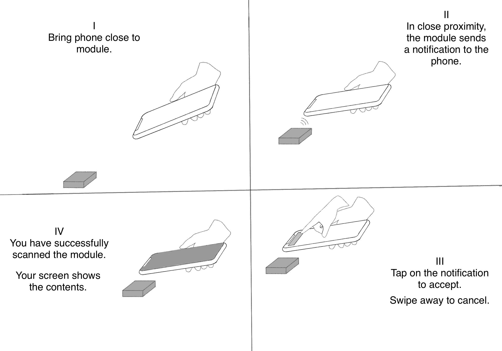

Introduction
Sustainability
Control Modules
Our modules are designed in-house and its housings are 3d printed, mass produced using injection moulding or crafted from wood. They are then carefully assembled and adapted for client use cases. Fitted in leather, metal-like plated or painted our modules can then make their way to their deployment site.
Technology
We leverage the technology used to create wireless payment methods like apple pay, pay'n'pass and similar to trigger useful actions on a phone or display relevant information, when it is brought into the proximity of one of our control modules. The action to execute or content to be shared can easily be altered via a currently in-development app directly from a phone.
Thus, commonly it relieves the internet and servers of traffic or less common, provide vital decentralised digital infrastructure for off-grid, poorly connected or disaster environments.
B2B centric applications
The technology doesn't require an internet connection per se, which allows for many niche use cases. Introducing the internet into the mix opens up all today possible actions to be executed - the possibilities are limited to imagination of application.
Customer centric applications
A decentralised, locally used, portable device that is easily readable can share data between mobile devices without internet. That is the second major application of our technology and our modules. Two users with our modules could exchange contact details solely by scanning each other's module, which is done through phone-module proximity.
Use Cases
Regular scenario of use
One of our modules is approached by a phone. Within close proximity the user is prompted to allow a pre-programmed action to execute.
These actions can be as simple as a sole message or varyingly complex.
A customer in a store could get further instructions, help, related & complementary products directly from the packaging of a product on the shelf.
Use locally stationed
A semi-permanently placed module fosters habitual interaction and eases identification, thus best used as brand addition.
Located on the hotel lobby counter, a module can easily become the simplest & recognised way to connect to the guest Wifi.
At events they can be used to register attendees or function as a informational terminal.
Use portable as accessoire
Adding an extra layer of security to a firm by storing a long password or logging employee shifts can be multi-functional module uses.
Having individuals use the module as a temporary data storage device to be altered swiftly yields max utility.
Resources
[ Visual walkthrough of usage ]
[ Visual representation of actual usage ]
[ 3D animated representation of control module -- dissected ]
Projects
Digital Portfolio -- VIC
A live example that you will soon be able to get your hands on is a web app that generates a website with given contact & portfolio details. This website is then linked to one of our modules. The user can then easily share their details by routing the recipient to said website, when they approach the proximity of the module.
Have a look at the VIC (Virtual Identity Card) Demo
In-situ deployment in restaurants
Another soon to be seen live example is a module on the tables in a restaurant, swiftly adding digital functionality. Such a use case could display the menu card or replace paper receipts. The demo video showcases the variety of this technology for use cases. Different levels of interaction with the customer or potential customer are possible and enables retention increase potential.
Have a look at a live Demo